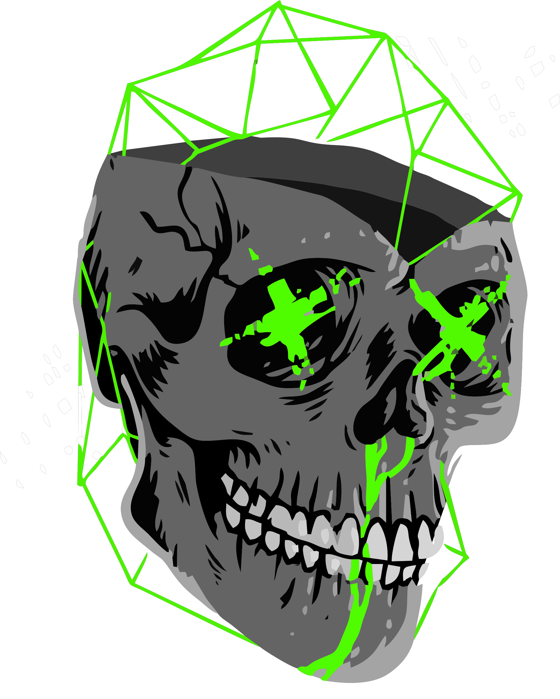

Somos mais que uma equipe, somos amigos!
Nossa história começou no primeiro período da faculdade, quando a paixão pela tecnologia nos uniu.
Desde então, nos tornamos mais do que colegas de turma, somos amigos que compartilham a mesma visão: transformar ideias em soluções digitais inovadoras.
Acreditamos que a tecnologia tem o poder de fazer a diferença no mundo, e por isso, nos dedicamos a criar projetos que impactam positivamente a vida das pessoas.
Ao longo dos anos, acumulamos experiência em diversas áreas, como desenvolvimento de software, design web, e segurança da informação.
Nosso trabalho em equipe se mostrou eficiente desde o segundo período, quando nós fizemos um protótipo de um aplicativo para uma clínica veterinária, que tinha integrado um e-comerce para seus clientes.
Já no terceiro período, a equipe demonstra novamente seu potencial fazendo um sistema, também para uma clínica, mas dessa vez para a clinicor, uma empresa real e que precisava de um sistema q funcionasse de forma plena e segura.
Mais do que uma equipe de TI, somos um grupo de amigos apaixonados por tecnologia. Acreditamos que a colaboração, a comunicação e o trabalho em equipe são essenciais para alcançarmos grandes resultados.
Nossa missão é oferecer soluções completas e personalizadas, que atendam às necessidades específicas de cada cliente. Trabalhamos em conjunto, utilizando nossas habilidades e experiências complementares, para garantir que cada projeto seja um sucesso.
Se você busca uma equipe confiável e experiente para transformar suas ideias em realidade, entre em contato conosco!